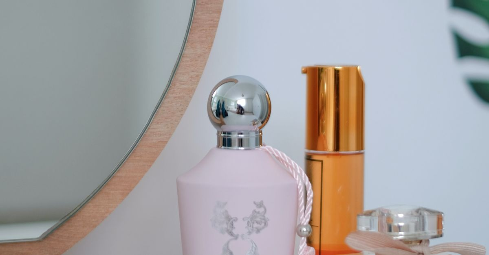

2 Élles EditSeleçãoBeleza
Os perfumes que marcaram gerações
De 1921 a 2014, sete fragrâncias que não só venderam muito — mudaram o que a perfumaria achava possível fazer com um frasco

Foto: Pexels
Todo perfume que "define uma geração" tem uma coisa em comum: quebrou uma regra que ninguém tinha coragem de quebrar antes. Esta lista reúne sete fragrâncias que fizeram isso — da primeira composição abstrata da história a uma revolução unissex nos anos 90 — e que, décadas depois, continuam sendo referência de quem trabalha com perfumaria.
Chanel Nº 5
Chanel
O primeiro grande perfume abstrato da história. Antes dele, fragrâncias tentavam cheirar a uma coisa só — uma flor, uma fruta. Ernest Beaux, o perfumista de Coco Chanel, usou uma dose inédita de aldeídos sintéticos pra criar um cheiro que não existia na natureza. Mais de cem anos depois, ainda é um dos perfumes mais vendidos do mundo.
Ver na AmazonAngel
Thierry Mugler
Um choque olfativo proposital: Angel foi o primeiro grande perfume "gourmand" comercial, misturando notas de caramelo e chocolate com patchouli, numa época em que perfumaria fina só falava a língua floral ou cítrica. Dividiu opiniões no lançamento e virou um dos best-sellers mais duradouros da história recente.
Ver na AmazonCK One
Calvin Klein
O primeiro grande perfume unissex do mercado de massa, lançado com uma campanha publicitária minimalista em preto e branco que ajudou a definir a estética "heroin chic" dos anos 90. A ideia de um cheiro "pra uma geração ainda sem definição de gênero" foi revolucionária pra época — e continua sendo um dos perfumes mais reconhecíveis já criados.
Ver na AmazonCoco Mademoiselle
Chanel
Criado por Jacques Polge pra falar com uma Chanel mais jovem que o Nº 5 original — patchouli, laranja e rosa numa combinação que virou sinônimo de sofisticação contemporânea. É, até hoje, uma das entradas mais comuns de quem está descobrindo perfumaria de nicho através de uma grife.
Ver na AmazonLight Blue
Dolce&Gabbana
Dois anos de desenvolvimento pra capturar uma ideia bem específica: verão no Mediterrâneo. Maçã verde, cedro e junípero num frasco que remete a limonada e mar — virou o perfume-símbolo dos anos 2000 pra quem queria cheirar a "férias na Itália" o ano inteiro.
Ver na AmazonFlowerbomb
Viktor&Rolf
Lançado numa boutique parisiense em janeiro de 2005, Flowerbomb pegou a ideia de "bomba floral" ao pé da letra — uma explosão adocicada de jasmim, rosa e patchouli em frasco de diamante que virou tão icônico quanto o próprio perfume. Ajudou a consolidar a dupla de estilistas holandeses como uma potência também na perfumaria.
Ver na AmazonBlack Opium
Yves Saint Laurent
Café, baunilha e flor de laranjeira numa fórmula pensada pra ser viciante — literalmente inspirada na cafeína. Lançado em setembro de 2014, é o perfume que melhor representa a década de 2010: mais escuro, mais intenso, feito pra ser notado à distância, não descoberto de perto.
Ver na AmazonProduzido com ajuda de Inteligência Artificial.
Este texto contém links de afiliado da Amazon. Se você comprar através deles, o 2 Élles Edit pode receber uma pequena comissão, sem custo adicional pra você.